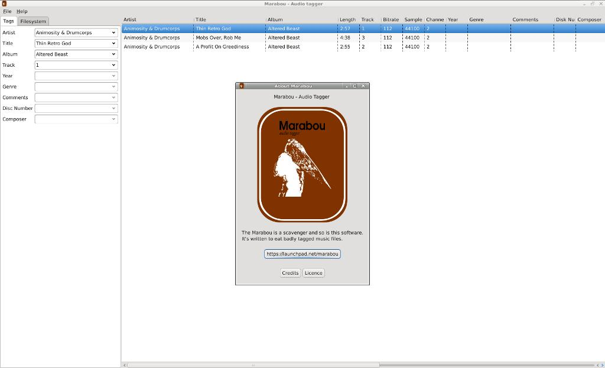

Welcome to GitHub Pages.
Marabou is an audio tagger in the making. It's written in Java using SWT to provide a native look and feel on Linux, Windows and Mac OS X.
Currently there istn't a release out yet, but we are working on it from time to time. Help is appreciated, drop us a line, write a bug report or send a pull request.
Here is a somewhat older screenshot:
